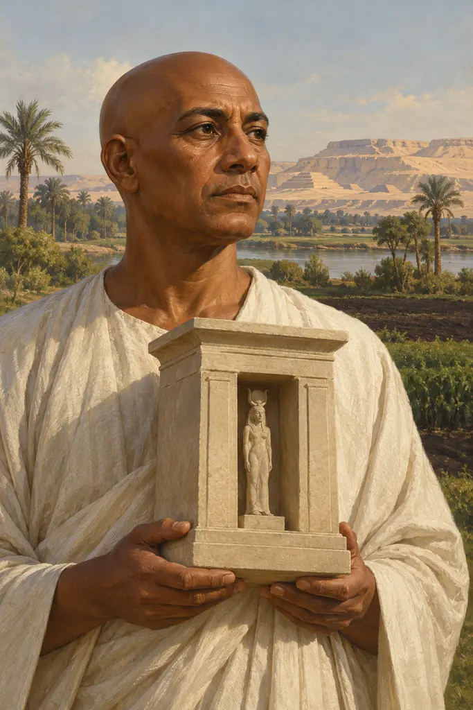
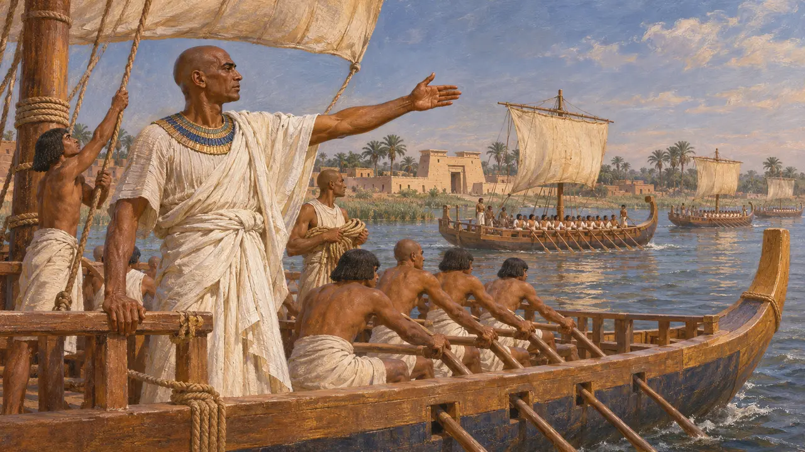
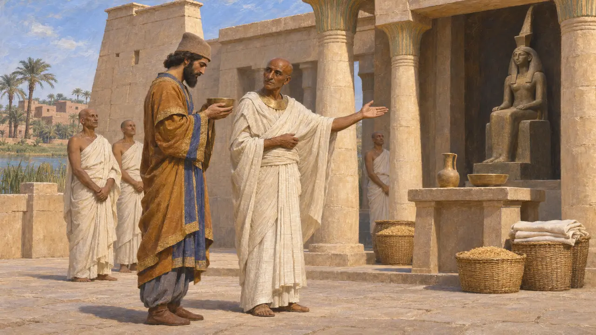
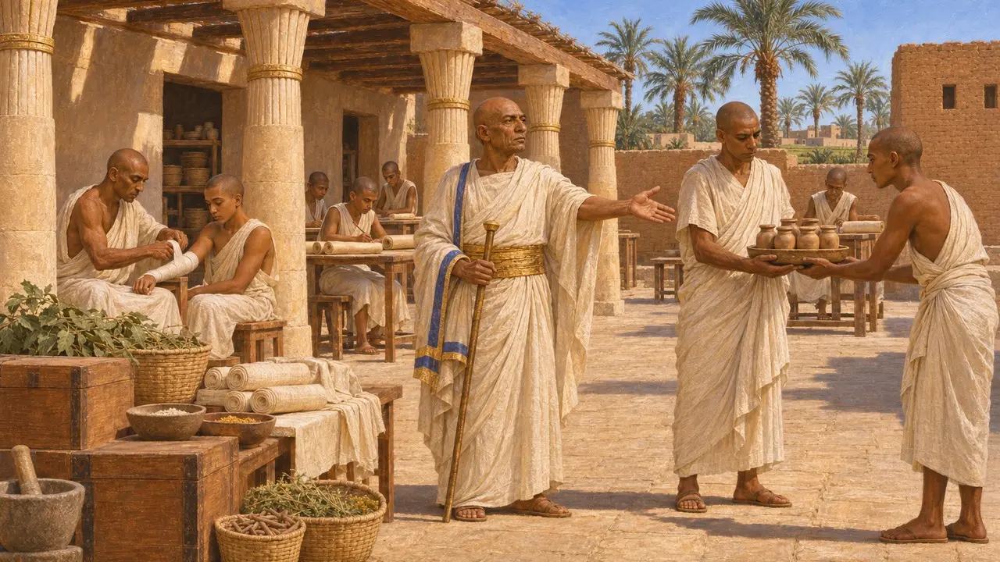
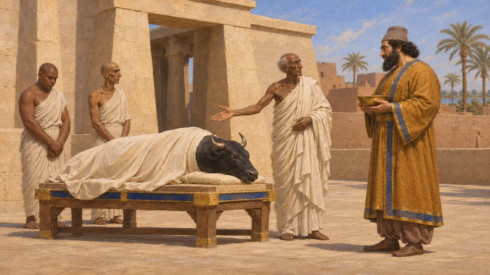
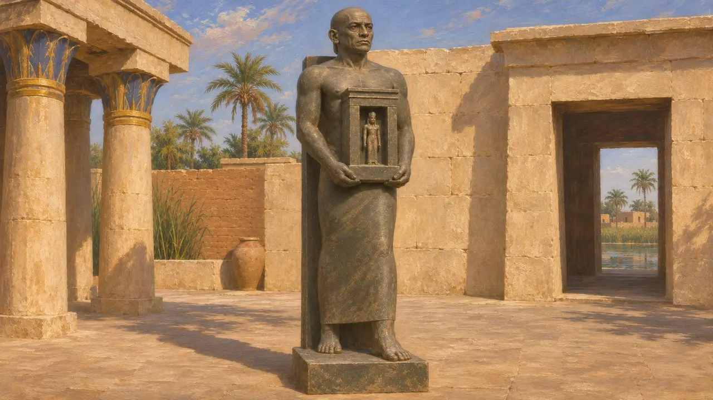

Udjahorresnet
Ägyptischer Flottenbefehlshaber, Arzt und Priester von Sais, 6. Jahrhundert v. Chr.
Im Spiel: Level 2: Der Lanzenträger, Level 5: Die Gründungsurkunde
Udjahorresnet war ein ägyptischer Beamter aus Sais, der unter den letzten einheimischen Königen Schiffe befehligte und danach Kambyses und Dareios diente. Seine beschriftete Statue ist der ausführlichste ägyptische Bericht über die persische Eroberung. Sie zeigt, wie ein fremder König in das ägyptische Königtum eingefügt werden konnte und wie die örtlichen Eliten unter den neuen Herrschern ihre Tempel und Laufbahnen bewahrten.
Im Spiel: Die Anmerkung in der Chronik des Spiels schreibt ihm zu, die ägyptischen Königsnamen sowohl des Kambyses als auch des Dareios verfasst zu haben. Seine Statue beansprucht dies nur für Kambyses; für Dareios verzeichnet sie die Wiederherstellung des Lebenshauses in Sais.

Befehlshaber der königlichen Schiffe
Zeitgenössisch belegtSeine Statue berichtet, dass er unter Amasis und Psammetich III., den letzten Königen der saitischen Dynastie, die königlichen Kriegsschiffe befehligte. Außerdem trug er Priestertitel in Sais, der Heimatstadt der Dynastie und dem Sitz der Göttin Neith. Als Kambyses 525 v. Chr. Ägypten eroberte, trat er in persische Dienste und behielt seinen Rang.
Statue of Udjahorresnet, Vatican Museums

Arzt des Kambyses und Schöpfer seines Königsnamens
Zeitgenössisch belegtKambyses machte ihn zum obersten Arzt und zum Gefährten des Königs. Udjahorresnet gibt an, er habe den ägyptischen Thronnamen des Kambyses verfasst: Mesutira, „Sprössling des Re“. Er bewog den König, Fremde zu vertreiben, die sich im Tempel der Neith niedergelassen hatten, dessen Einkünfte und Feste wiederherzustellen und selbst nach Sais zu kommen, um die Göttin zu verehren.
Statue of Udjahorresnet; M. Lichtheim, Ancient Egyptian Literature III, 1980

Die Wiederherstellung des Lebenshauses für Dareios
Zeitgenössisch belegtDer Text berichtet, er sei bei Dareios in Elam gewesen, als der König ihn nach Ägypten zurückbeorderte. Seine Aufgabe war es, das Lebenshaus wiederherzustellen, die Tempeleinrichtung, in der Schreiber Texte abschrieben und Ärzte ausgebildet wurden. Er sagt, er habe es mit Personal besetzt und mit allem ausgestattet, was es brauchte, denn Dareios kannte den Wert der Heilkunst.
Statue of Udjahorresnet

Kollaborateur oder Beschützer seines Volkes
UmstrittenHerodot schildert Kambyses als wahnsinnigen König, der den Apis-Stier tötete und die ägyptischen Götter verhöhnte. Die Statue zeigt ihn dagegen, wie er Neith ehrt, und eine Apis-Stele verzeichnet einen Stier, der während seiner Herrschaft mit königlichen Ehren bestattet wurde. Historiker streiten noch immer, ob Udjahorresnet ein eigennütziger Kollaborateur war oder ein Patriot, der seine Stadt schützte. Uneinig sind sie auch darüber, ob die große Unruhe, die er beschreibt, die Eroberung von 525 v. Chr. oder die Unruhen von 522 v. Chr. meint.
Herodotus 3.27-29; G. Posener, La première domination perse en Égypte, 1936; A. B. Lloyd, JEA 68, 1982

Die Statue und das Grab
Zeitgenössisch belegtSeine Standfigur hält einen kleinen Schrein und ist mit seiner Autobiografie bedeckt. Sie wurde wohl in römischer Zeit nach Italien gebracht und befindet sich heute in den Vatikanischen Museen. Tschechische Archäologen, die in Abusir bei Memphis arbeiteten, legten ein großes Schachtgrab frei, das ihm zugeschrieben wird, und veröffentlichten es 1999.
L. Bareš, The Shaft Tomb of Udjahorresnet at Abusir, 1999
Quellen
- Statue of Udjahorresnet, Vatican Museums
- A. B. Lloyd, The Inscription of Udjahorresnet: A Collaborator's Testament, Journal of Egyptian Archaeology 68, 1982
- G. Posener, La première domination perse en Égypte, 1936
- M. Lichtheim, Ancient Egyptian Literature III, 1980
- L. Bareš, The Shaft Tomb of Udjahorresnet at Abusir, 1999
- Herodotus 3.27-29